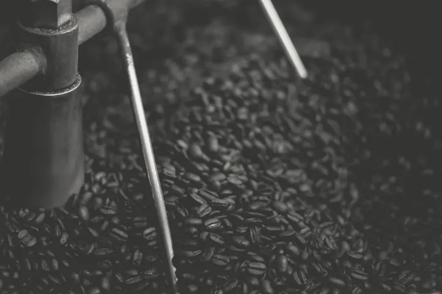
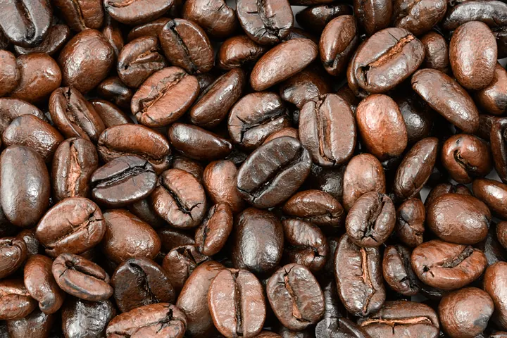
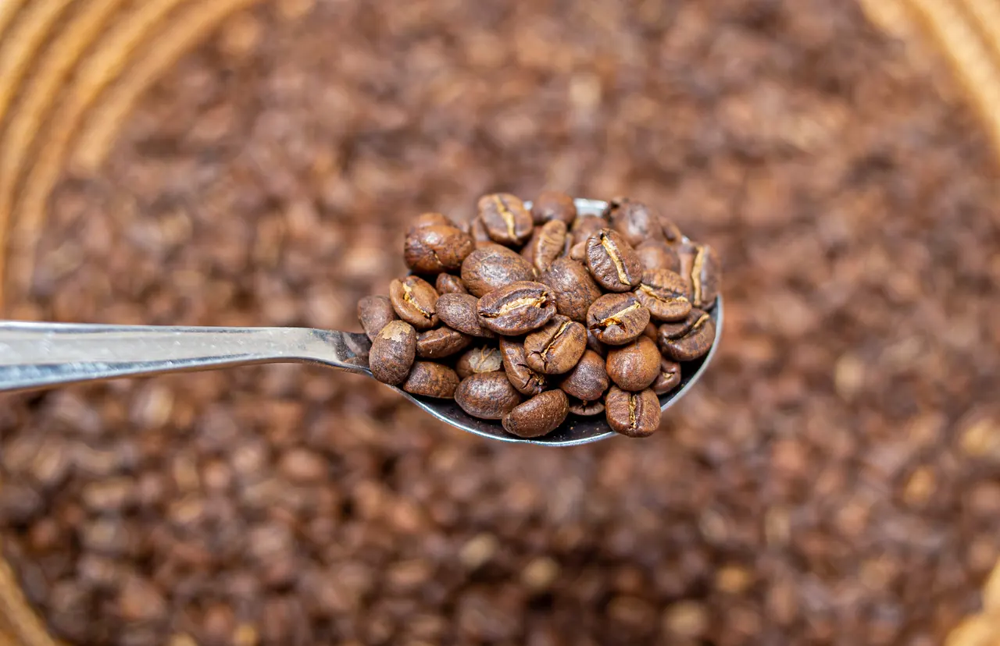
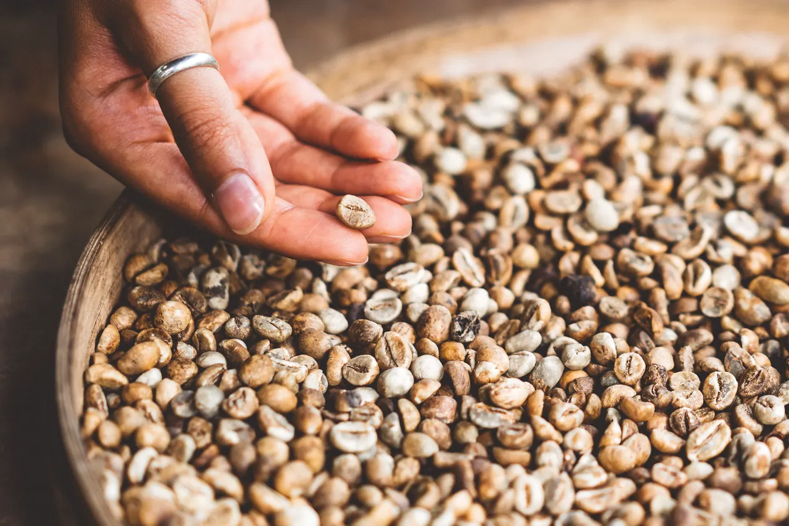
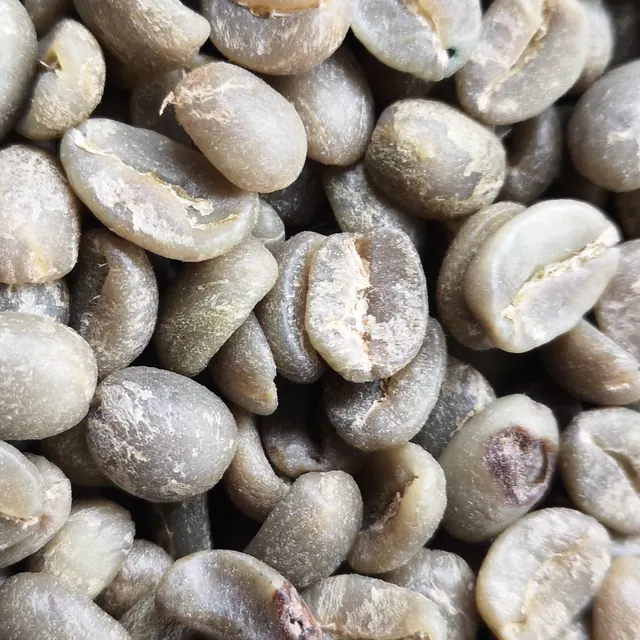
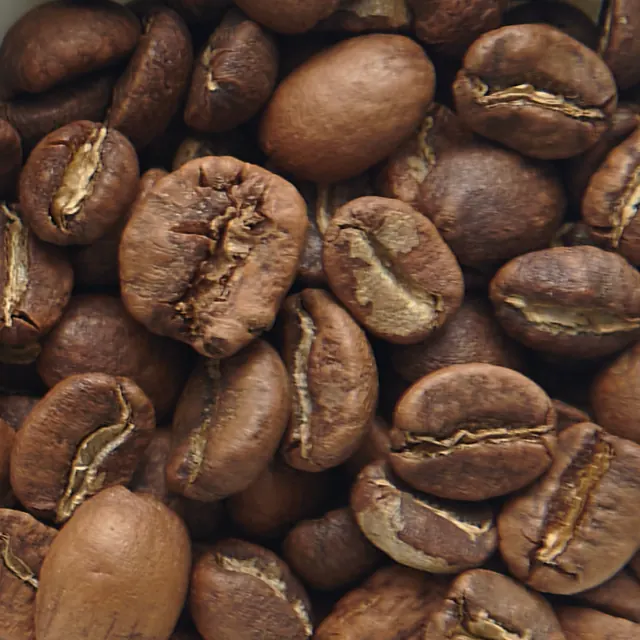

Demo shop: nothing is charged at checkout.
Coffee that starts as a green bean.
250 g from €11.50, whole bean or ground for espresso and filter.
About Dolce Nova
Six single-origin coffees, roasted in small batches. Follow one bean from a green seed to your cup, then choose how you brew it.


Six coffees. Three grinds.
Open a coffee, choose whole bean, espresso or filter, and see the grind you will get.

Light roast · Kenya
Nyeri Gatomboya
Blackcurrant, grapefruit and cane sugar. A washed coffee, roasted light to keep its fruit. 250 g from €16.50.
Origin
Green coffee, sorted by hand.
Coffee is the seed of a cherry. Picked, washed and dried, it is green, dense and smells of fresh hay.
It is sorted by hand before it travels, because a handful of faulty beans can flatten a whole batch.





Roast
From green bean to dark.
About twelve minutes in a hot drum turn a grassy seed into coffee. Follow one bean down the path.
Raw seed · room temperature
Green
Dense, grassy and about 11% water. It smells of fresh hay, not of coffee yet.
First crack · near 196 °C
Light
The bean dries, yellows, then cracks open with an audible pop. Stopped soon after, it keeps bright fruit and florals.
Development · near 210 °C
Medium
Sugars caramelise and the colour deepens to chestnut. Acidity softens, and sweetness and body take over.
Second crack · near 224 °C
Dark
Oils rise to the surface and the bean turns glossy, almost black. Cocoa, smoke and a bitter edge.

At home
A filter recipe.
The last step is yours. Start here and adjust to taste.
- 15 g of coffee, ground for filter
- 250 g of water, just off the boil
- About 3 minutes, start to finish